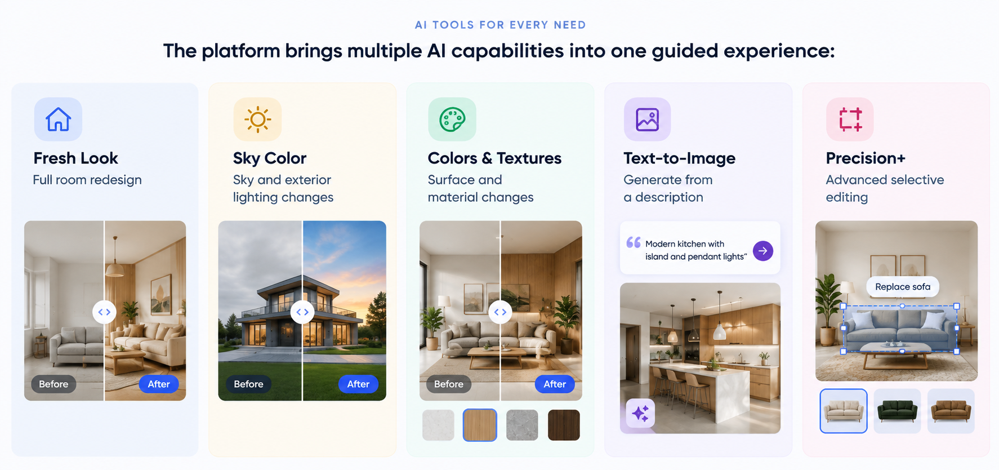
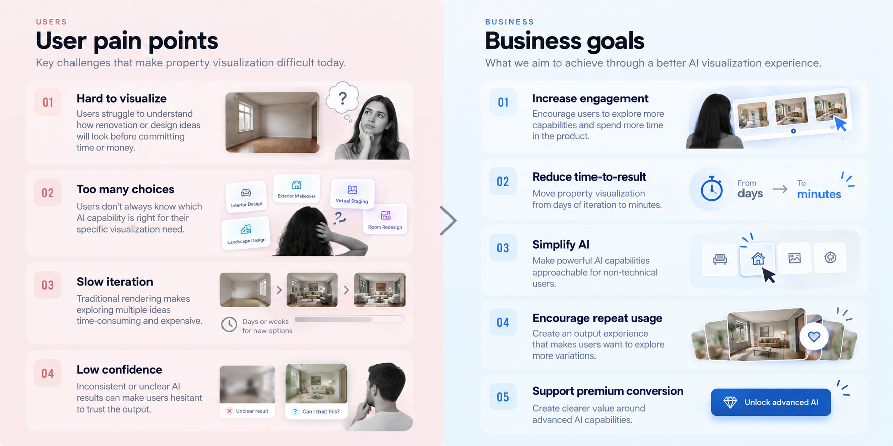
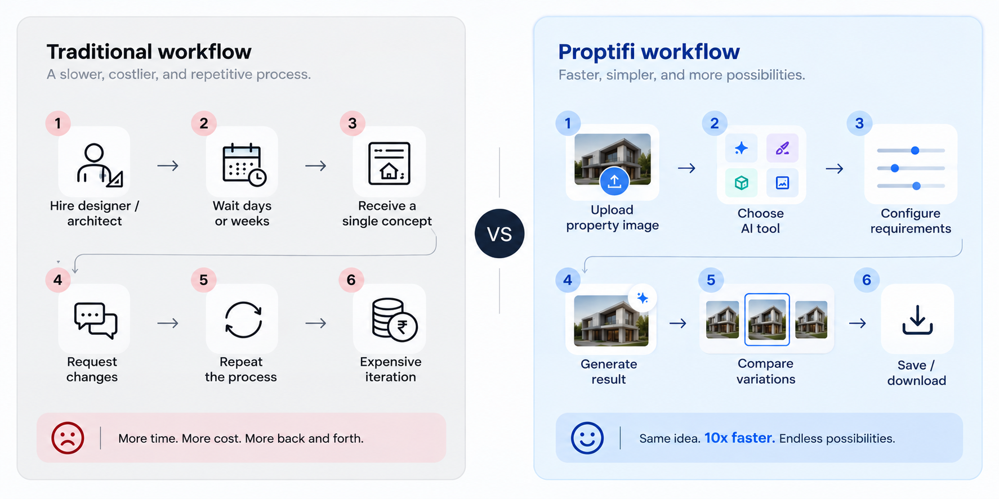
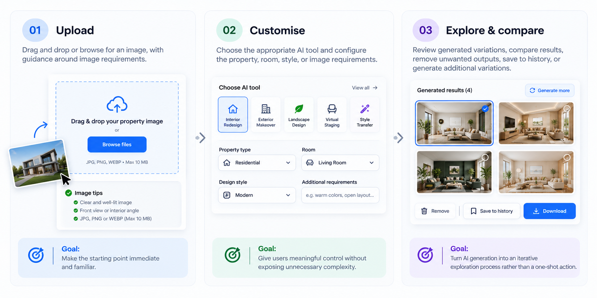

One platform. Five AI capabilities.
Proptifi brings multiple AI-powered visualization capabilities into one guided experience, helping users transform, explore, and iterate on property ideas from a single platform.

Traditional property visualization was slow, expensive, and difficult to explore.
Traditional visualization workflows were expensive, time-consuming, and difficult to iterate on. Users often had to rely on specialists for relatively simple visual changes, making experimentation slow and costly.

Understanding users and the market
I combined qualitative research, market analysis, and workflow evaluation to understand how users currently approach property visualization and where existing AI experiences fall short.
Key insight
What the market was missing
Existing solutions offered powerful visualization capabilities, but the experience was fragmented across different tools, workflows, and interaction models.
The opportunity
From traditional visualization to self-service
We shifted the experience from a slow, one-directional process to a guided workflow that lets users generate, compare, and iterate independently.

Five decisions that shaped the product
The product experience was shaped around five decisions designed to reduce cognitive load, preserve context, and make AI feel approachable.
Three-step user experience
The final experience reduced the core workflow to three understandable stages.

What changed?
01 — A guided self-serve experience
Transformed a fragmented visualization workflow into a structured digital experience.
02 — Simpler AI interaction
Made multiple AI capabilities easier to understand through a consistent workflow.
03 — Greater confidence in results
Comparison, history, and iterative generation helped users evaluate and refine outputs.
04 — A scalable product foundation
Established reusable patterns across AI capabilities while maintaining a consistent experience.